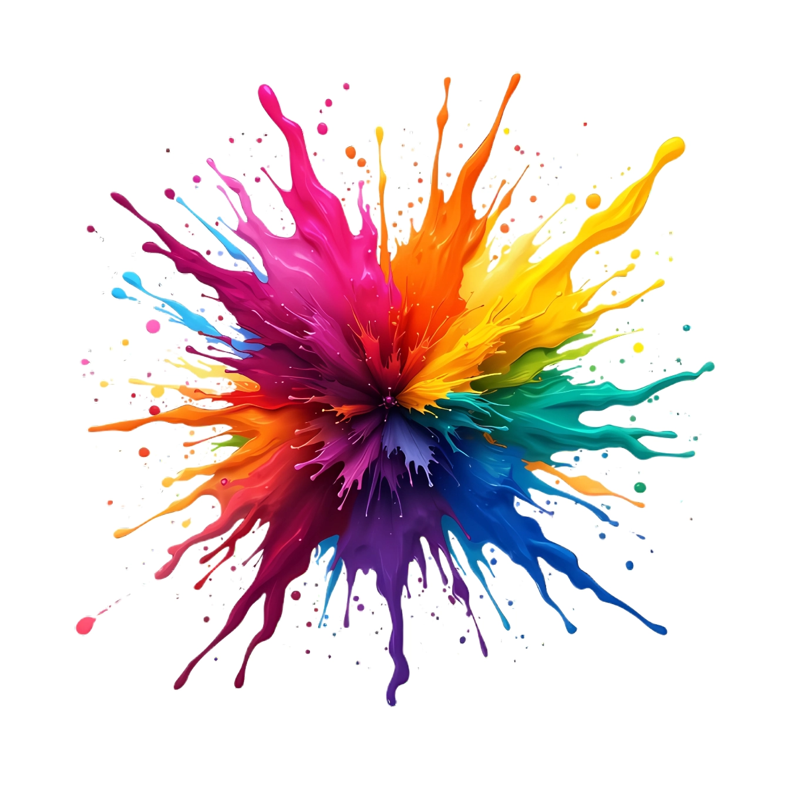
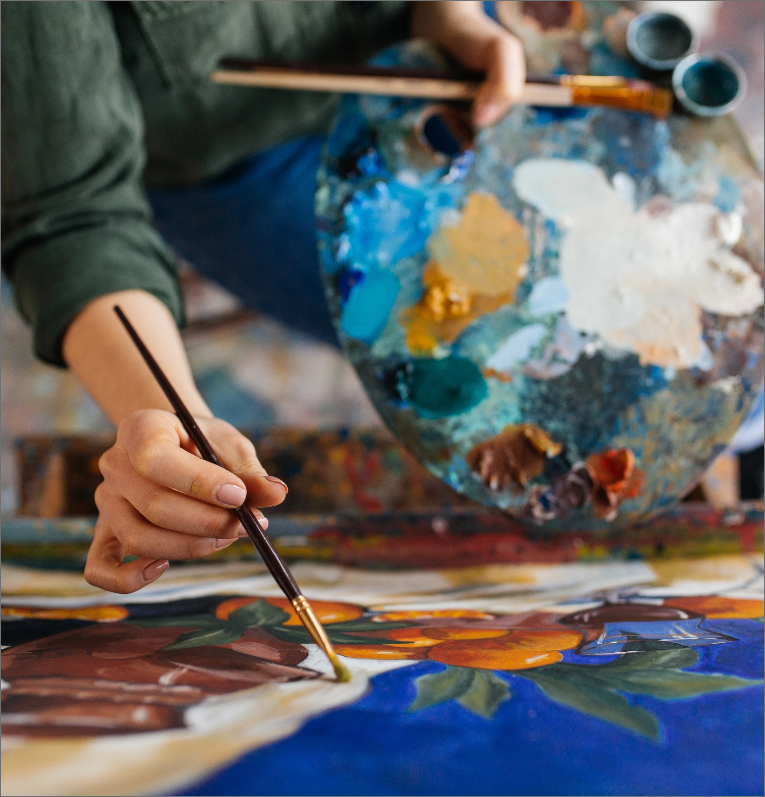

La Fédération Française des Arts Plastiques s'inscrit dans la continuité du Mouvement des Arts, association créée à Hyères en 1996, dont elle prolonge l'élan tout en ouvrant une nouvelle perspective.
Plus qu'un héritage, la F.F.A.P. est un projet en devenir : elle ambitionne de rassembler artistes, publics et acteurs culturels autour d'une vision dynamique de la création contemporaine, favorisant les échanges, les rencontres et l'innovation.
À travers son Salon annuel des Arts Contemporains et diverses actions culturelles (sorties, ateliers, conférences, expositions), la Fédération souhaite élargir son rayonnement et encourager la diversité des expressions artistiques. Elle œuvre à créer des passerelles entre disciplines, territoires et générations afin de faire dialoguer des pratiques et des sensibilités multiples.
Portée par des valeurs de liberté, de partage et d'ouverture, la F.F.A.P. se construit comme un espace vivant, tourné vers l'avenir. Elle défend l'idée d'un art accessible et fédérateur, où la création devient à la fois lien social, source d'inspiration et force collective.

La mission de la Fédération Française des Arts Plastiques est de favoriser l'accès à la création artistique et de soutenir les artistes dans le développement de leurs projets. À travers ses actions, la fédération souhaite :
Ces initiatives permettent de développer un véritable réseau artistique à l'échelle nationale.

La Fédération Française des Arts Plastiques développe de nombreuses actions pour soutenir et valoriser les artistes et les projets artistiques.
Parmi ses initiatives :

Organisation d'expositions et d'événements artistiques

Mise en relation entre artistes, structures et publics

Accompagnement et ressources pour les artistes

Ateliers, formations et rencontres culturelles

Promotion des initiatives artistiques sur le territoire

Développement de projets artistiques collaboratifs à l'échelle nationale